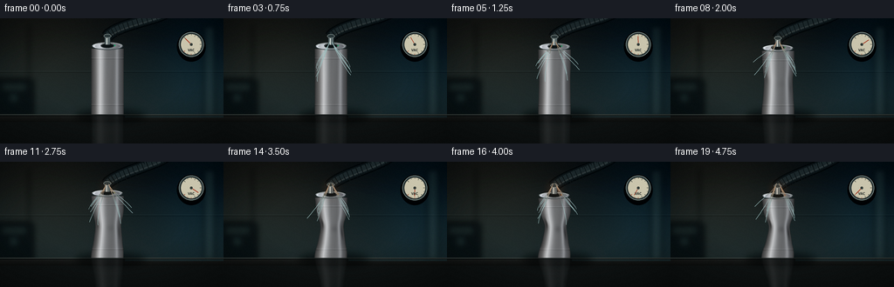
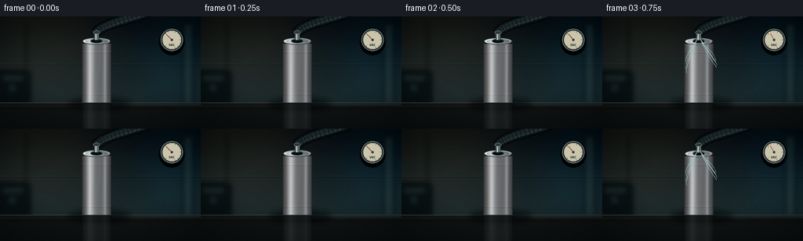

CODING AGENTS AS PIXEL WORLD MODELS
traex/DeepSeek-V4.1-Flash · phygen_019
点击播放 · 原生 RGB 像素
逐轮保存的候选
回放视频、检查图与代码变化。
每份候选均可单独播放。实际图片检查记录在下方工具轨迹中。
候选 01播放与检查图
点击播放 · 原生 RGB 像素


展开代码变化
--- 上一保存版本
+++ 本次保存版本
@@ -0,0 +1,546 @@
+from __future__ import annotations
+
+import math
+from pathlib import Path
+
+import numpy as np
+from PIL import Image, ImageDraw, ImageFilter, ImageFont
+
+import artifact_io
+
+
+W, H = 256, 144
+FPS = 4.0
+FRAMES = 20
+SUPERSAMPLE = 4
+S = SUPERSAMPLE
+CASE_DIR = Path(__file__).resolve().parent
+
+FONT_BOLD = "/usr/share/fonts/truetype/dejavu/DejaVuSansCondensed-Bold.ttf"
+
+
+def clamp(value, low=0.0, high=1.0):
+ return max(low, min(high, value))
+
+
+def smoothstep(value):
+ value = clamp(value)
+ return value * value * (3.0 - 2.0 * value)
+
+
+def hp(value):
+ return int(round(value * S))
+
+
+def bezier(points, count=90):
+ points = np.asarray(points, dtype=np.float64)
+ t = np.linspace(0.0, 1.0, count)
+ omt = 1.0 - t
+ return (
+ omt[:, None] ** 3 * points[0]
+ + 3.0 * omt[:, None] ** 2 * t[:, None] * points[1]
+ + 3.0 * omt[:, None] * t[:, None] ** 2 * points[2]
+ + t[:, None] ** 3 * points[3]
+ )
+
+
+def paste_layer(base, layer):
+ base.alpha_composite(layer)
+
+
+def draw_background():
+ width, height = W * S, H * S
+ yy, xx = np.mgrid[0:height, 0:width].astype(np.float32)
+ x = xx / S
+ y = yy / S
+
+ top = np.array([8, 15, 20], dtype=np.float32)
+ horizon = np.array([27, 40, 43], dtype=np.float32)
+ mix = np.clip(y / 112.0, 0.0, 1.0)[..., None]
+ mix = mix * mix * (3.0 - 2.0 * mix)
+ rgb = top + (horizon - top) * mix
+
+ key = np.exp(-(((x - 48.0) / 104.0) ** 2 + ((y - 14.0) / 92.0) ** 2))
+ rgb += key[..., None] * np.array([23.0, 18.0, 10.0], dtype=np.float32)
+ cool = np.exp(-(((x - 230.0) / 54.0) ** 2 + ((y - 48.0) / 84.0) ** 2))
+ rgb += cool[..., None] * np.array([2.0, 12.0, 17.0], dtype=np.float32)
+
+ # Sparse wall seams keep the setting legible without competing with the can.
+ seam = np.exp(-((y - 61.0) / 0.42) ** 2)
+ rgb += seam[..., None] * np.array([7.0, 10.0, 10.0], dtype=np.float32)
+ seam2 = np.exp(-((y - 62.0) / 0.38) ** 2)
+ rgb -= seam2[..., None] * np.array([9.0, 12.0, 12.0], dtype=np.float32)
+
+ image = Image.fromarray(np.clip(rgb, 0, 255).astype(np.uint8), "RGB").convert("RGBA")
+
+ furniture = Image.new("RGBA", image.size, (0, 0, 0, 0))
+ draw = ImageDraw.Draw(furniture)
+ # Out-of-focus laboratory equipment on the left and a soft light strip on the right.
+ draw.rounded_rectangle(
+ (hp(-18), hp(69), hp(39), hp(119)),
+ radius=hp(5),
+ fill=(7, 15, 18, 190),
+ )
+ draw.rectangle((hp(3), hp(76), hp(29), hp(82)), fill=(31, 45, 45, 150))
+ draw.ellipse((hp(9), hp(85), hp(22), hp(98)), fill=(11, 21, 24, 180))
+ draw.ellipse((hp(13), hp(89), hp(18), hp(94)), fill=(44, 70, 68, 120))
+ draw.rectangle((hp(233), hp(9), hp(247), hp(113)), fill=(35, 55, 57, 90))
+ draw.rectangle((hp(238), hp(9), hp(241), hp(113)), fill=(103, 132, 124, 45))
+ draw.line(
+ [(hp(33), hp(8)), (hp(33), hp(77)), (hp(23), hp(96))],
+ fill=(4, 9, 12, 150),
+ width=hp(2),
+ )
+ furniture = furniture.filter(ImageFilter.GaussianBlur(radius=hp(3.0)))
+ image.alpha_composite(furniture)
+
+ # Countertop, edge and a restrained reflected sheen.
+ table = Image.new("RGBA", image.size, (0, 0, 0, 0))
+ draw = ImageDraw.Draw(table)
+ draw.rectangle((0, hp(111), width, height), fill=(21, 25, 25, 255))
+ for j in range(32):
+ py = 111.0 + j * 0.25
+ color = int(33 - j * 0.42)
+ draw.rectangle(
+ (0, hp(py), width, hp(py + 0.27)),
+ fill=(color, color + 2, color + 1, 255),
+ )
+ draw.rectangle((0, hp(110.2), width, hp(112.0)), fill=(57, 64, 61, 255))
+ draw.rectangle((0, hp(111.6), width, hp(112.2)), fill=(12, 15, 15, 210))
+ draw.rectangle((hp(143), hp(112), width, hp(114)), fill=(39, 47, 44, 90))
+ image.alpha_composite(table)
+
+ # Vignette.
+ nx = (xx / width - 0.5) * 2.0
+ ny = (yy / height - 0.5) * 2.0
+ radius = np.sqrt(nx * nx * 0.72 + ny * ny)
+ vignette = np.clip((radius - 0.55) / 0.72, 0.0, 1.0)
+ arr = np.asarray(image.convert("RGB"), dtype=np.float32)
+ arr *= (1.0 - 0.34 * vignette[..., None])
+ return Image.fromarray(np.clip(arr, 0, 255).astype(np.uint8), "RGB").convert("RGBA")
+
+
+def can_profile(y, top_y, base_y, collapse):
+ u = np.clip((y - top_y) / max(base_y - top_y, 1e-6), 0.0, 1.0)
+ waist = np.exp(-(((u - 0.50) / 0.205) ** 2))
+ lower_pinch = np.exp(-(((u - 0.76) / 0.115) ** 2))
+ shoulder = np.exp(-(((u - 0.095) / 0.075) ** 2))
+ half = 18.7 * (
+ 1.0
+ - 0.355 * collapse * waist
+ - 0.105 * collapse * lower_pinch
+ - 0.030 * collapse * shoulder
+ )
+ half += 0.22 * collapse * np.sin(u * math.pi * 8.0 + 0.6) * waist
+ center = 123.0 + 1.7 * collapse * np.sin(u * math.pi) - 0.45 * collapse * u
+ return u, half, center
+
+
+def render_body(collapse, top_y, base_y):
+ left, right = hp(89), hp(157)
+ top, bottom = hp(25), hp(114)
+ yy, xx = np.mgrid[top:bottom, left:right].astype(np.float32)
+ x = xx / S
+ y = yy / S
+
+ u, half, center = can_profile(y, top_y, base_y, collapse)
+ inside = (y >= top_y) & (y <= base_y) & (np.abs(x - center) <= half)
+ xnorm = np.clip((x - center) / np.maximum(half, 0.01), -1.0, 1.0)
+ theta = np.arcsin(xnorm)
+ z = np.sqrt(np.maximum(1.0 - xnorm * xnorm, 0.0))
+
+ # Brushed-metal environment lighting: warm key, cool fill, and a crisp upper highlight.
+ metal = (
+ 0.29
+ + 0.32 * np.exp(-(((theta + 0.46) / 0.285) ** 2))
+ + 0.17 * np.exp(-(((theta - 0.62) / 0.14) ** 2))
+ + 0.13 * z
+ - 0.16 * (1.0 - z) ** 1.8
+ )
+ metal += 0.035 * np.exp(-(((theta + 0.47) / 0.055) ** 2))
+ brushed = (
+ 0.011 * np.sin(x * 13.7 + y * 0.27)
+ + 0.008 * np.sin(x * 29.0 - y * 0.11)
+ + 0.006 * np.sin(x * 51.0 + y * 0.06)
+ )
+ metal += brushed
+
+ # Compression folds travel through the surface and read as dark creases with bright lips.
+ fold_l = np.exp(-(((u - 0.43) / 0.092) ** 2)) * np.exp(
+ -(((theta + 0.92) / 0.16) ** 2)
+ )
+ fold_r = np.exp(-(((u - 0.58) / 0.115) ** 2)) * np.exp(
+ -(((theta - 0.94) / 0.14) ** 2)
+ )
+ fold_c = np.exp(-(((u - 0.52) / 0.060) ** 2)) * np.exp(
+ -(((theta - 0.18) / 0.32) ** 2)
+ )
+ fold_lip = np.exp(-(((u - 0.39) / 0.070) ** 2)) * np.exp(
+ -(((theta + 0.72) / 0.12) ** 2)
+ )
+ metal -= collapse * (0.16 * fold_l + 0.13 * fold_r + 0.055 * fold_c)
+ metal += collapse * 0.13 * fold_lip
+
+ ring = np.exp(-(((u - 0.145) / 0.008) ** 2)) - np.exp(
+ -(((u - 0.151) / 0.008) ** 2)
+ )
+ metal += 0.10 * ring
+ ring2 = np.exp(-(((u - 0.855) / 0.009) ** 2)) - np.exp(
+ -(((u - 0.862) / 0.009) ** 2)
+ )
+ metal += 0.08 * ring2
+
+ warm = 0.08 * np.exp(-(((theta + 0.75) / 0.45) ** 2))
+ cool = 0.06 * np.exp(-(((theta - 0.80) / 0.35) ** 2))
+ rgb = np.empty((*inside.shape, 3), dtype=np.float32)
+ rgb[..., 0] = metal * 247.0 + warm * 42.0
+ rgb[..., 1] = metal * 251.0 + warm * 18.0 + cool * 6.0
+ rgb[..., 2] = metal * 255.0 - warm * 5.0 + cool * 31.0
+ rgb = np.clip(rgb, 0, 255)
+
+ alpha = np.where(inside, 255, 0).astype(np.uint8)
+ body = np.dstack([rgb.astype(np.uint8), alpha])
+ layer = Image.new("RGBA", (W * S, H * S), (0, 0, 0, 0))
+ layer.paste(Image.fromarray(body, "RGBA"), (left, top))
+ return layer, (half, center)
+
+
+def render_lid(collapse, top_y):
+ layer = Image.new("RGBA", (W * S, H * S), (0, 0, 0, 0))
+ cx = 123.0 - 0.4 * collapse
+ ty = top_y - 3.1
+ rx = 18.0 * (1.0 - 0.018 * collapse)
+ ry = 4.35 * (1.0 - 0.10 * collapse)
+
+ left, right = hp(cx - rx - 4), hp(cx + rx + 4)
+ top, bottom = hp(ty - ry - 4), hp(ty + ry + 5)
+ yy, xx = np.mgrid[top:bottom, left:right].astype(np.float32)
+ x = xx / S
+ y = yy / S
+ ex = (x - cx) / rx
+ ey = (y - ty) / ry
+ radius = np.sqrt(ex * ex + ey * ey)
+ inside = radius <= 1.0
+
+ metal = 0.49 - 0.16 * ex + 0.12 * (1.0 - radius)
+ metal += 0.14 * np.exp(-(((ex + 0.46) / 0.25) ** 2))
+ metal += 0.24 * np.exp(-(((radius - 0.87) / 0.055) ** 2))
+ dimple = np.exp(-((radius / 0.47) ** 2))
+ dimple_ring = np.exp(-(((radius - 0.44) / 0.055) ** 2))
+ metal -= 0.12 * collapse * dimple
+ metal += 0.11 * collapse * dimple_ring
+ rgb = np.stack(
+ [
+ np.clip(metal * 247.0 + 5.0, 0, 255),
+ np.clip(metal * 251.0 + 7.0, 0, 255),
+ np.clip(metal * 255.0 + 10.0, 0, 255),
+ ],
+ axis=-1,
+ )
+ alpha = np.where(inside, 255, 0).astype(np.uint8)
+ rgba = np.dstack([rgb.astype(np.uint8), alpha])
+ layer.paste(Image.fromarray(rgba, "RGBA"), (left, top))
+
+ draw = ImageDraw.Draw(layer)
+ rim_box = (hp(cx - rx), hp(ty - ry), hp(cx + rx), hp(ty + ry))
+ draw.ellipse(rim_box, outline=(42, 51, 53, 255), width=hp(1.05))
+ draw.arc(
+ (hp(cx - rx + 0.4), hp(ty - ry + 0.3), hp(cx + rx - 0.4), hp(ty + ry - 0.3)),
+ 185,
+ 350,
+ fill=(238, 244, 240, 220),
+ width=hp(0.55),
+ )
+ draw.arc(
+ (hp(cx - rx + 0.7), hp(ty - ry + 0.8), hp(cx + rx - 0.7), hp(ty + ry - 0.2)),
+ 12,
+ 170,
+ fill=(91, 104, 106, 190),
+ width=hp(0.45),
+ )
+ return layer, (cx, ty, rx, ry)
+
+
+def draw_hose(layer, start, end_control_1, end_control_2, end):
+ draw = ImageDraw.Draw(layer)
+ path = bezier([start, end_control_1, end_control_2, end], 110)
+ pts = [(float(p[0] * S), float(p[1] * S)) for p in path]
+
+ # Contact shadow and tube body.
+ draw.line(pts, fill=(3, 7, 9, 170), width=hp(14.5), joint="curve")
+ draw.line(pts, fill=(15, 23, 26, 255), width=hp(11.4), joint="curve")
+ draw.line(pts, fill=(31, 42, 45, 255), width=hp(8.2), joint="curve")
+
+ # Specular highlight follows one edge of the black ribbed hose.
+ for j in range(3, len(pts) - 3):
+ p = path[j]
+ tangent = path[j + 1] - path[j - 1]
+ length = max(np.linalg.norm(tangent), 1e-6)
+ normal = np.array([-tangent[1], tangent[0]]) / length
+ q = p + normal * 2.3
+ draw.ellipse(
+ (hp(q[0] - 0.55), hp(q[1] - 0.55), hp(q[0] + 0.55), hp(q[1] + 0.55)),
+ fill=(111, 125, 124, 95),
+ )
+
+ # Cross-ribs.
+ for j in range(4, len(pts) - 4, 7):
+ p = path[j]
+ tangent = path[j + 1] - path[j - 1]
+ length = max(np.linalg.norm(tangent), 1e-6)
+ normal = np.array([-tangent[1], tangent[0]]) / length
+ a = p - normal * 4.0
+ b = p + normal * 4.0
+ draw.line(
+ [(hp(a[0]), hp(a[1])), (hp(b[0]), hp(b[1]))],
+ fill=(6, 12, 14, 175),
+ width=hp(0.65),
+ )
+ a2 = p - normal * 3.7 + tangent / length * 0.35
+ b2 = p + normal * 3.7 + tangent / length * 0.35
+ draw.line(
+ [(hp(a2[0]), hp(a2[1])), (hp(b2[0]), hp(b2[1]))],
+ fill=(64, 78, 79, 75),
+ width=hp(0.32),
+ )
+
+
+def draw_fitting(layer, collapse, top_y):
+ cx = 123.0 - 0.4 * collapse
+ ty = top_y - 3.1
+ draw = ImageDraw.Draw(layer)
+
+ draw.ellipse(
+ (hp(cx - 7.8), hp(ty - 3.5), hp(cx + 7.8), hp(ty + 2.3)),
+ fill=(13, 20, 22, 255),
+ outline=(63, 72, 72, 255),
+ width=hp(0.65),
+ )
+ draw.arc(
+ (hp(cx - 7.0), hp(ty - 3.1), hp(cx + 7.0), hp(ty + 1.8)),
+ 195,
+ 340,
+ fill=(106, 115, 111, 200),
+ width=hp(0.55),
+ )
+ draw.rounded_rectangle(
+ (hp(cx - 3.3), hp(ty - 12.3), hp(cx + 3.3), hp(ty - 1.4)),
+ radius=hp(1.2),
+ fill=(92, 105, 107, 255),
+ outline=(31, 40, 42, 255),
+ width=hp(0.6),
+ )
+ draw.rectangle(
+ (hp(cx - 1.2), hp(ty - 11.8), hp(cx - 0.2), hp(ty - 1.9)),
+ fill=(203, 211, 205, 205),
+ )
+ draw.ellipse(
+ (hp(cx - 4.2), hp(ty - 13.8), hp(cx + 4.2), hp(ty - 9.3)),
+ fill=(45, 57, 59, 255),
+ outline=(143, 154, 150, 220),
+ width=hp(0.55),
+ )
+
+ led_color = (
+ int(44 + 104 * collapse),
+ int(146 - 58 * collapse),
+ int(105 - 55 * collapse),
+ 255,
+ )
+ draw.ellipse(
+ (hp(cx + 7.3), hp(ty - 1.7), hp(cx + 9.0), hp(ty + 0.0)),
+ fill=led_color,
+ )
+
+
+def draw_gauge(layer, vacuum):
+ draw = ImageDraw.Draw(layer)
+ gx, gy, radius = 219.0, 30.0, 14.2
+
+ draw.ellipse(
+ (hp(gx - radius - 2.2), hp(gy - radius - 1.1), hp(gx + radius + 2.2), hp(gy + radius + 5.5)),
+ fill=(3, 7, 9, 95),
+ )
+ draw.ellipse(
+ (hp(gx - radius), hp(gy - radius), hp(gx + radius), hp(gy + radius)),
+ fill=(28, 38, 40, 255),
+ outline=(116, 130, 127, 255),
+ width=hp(1.1),
+ )
+ draw.ellipse(
+ (hp(gx - radius + 1.6), hp(gy - radius + 1.6), hp(gx + radius - 1.6), hp(gy + radius - 1.6)),
+ fill=(199, 194, 171, 255),
+ outline=(50, 59, 58, 255),
+ width=hp(0.65),
+ )
+
+ # Gauge arc: zero at lower-left, full vacuum at lower-right.
+ start_angle = 225.0
+ sweep = 270.0
+ for j in range(13):
+ frac = j / 12.0
+ angle = math.radians(start_angle + sweep * frac)
+ outer = radius - 2.3
+ inner = radius - (3.5 if j % 3 else 4.4)
+ x1, y1 = gx + math.cos(angle) * outer, gy + math.sin(angle) * outer
+ x2, y2 = gx + math.cos(angle) * inner, gy + math.sin(angle) * inner
+ color = (151, 66, 47, 255) if frac > 0.78 else (65, 71, 66, 255)
+ draw.line([(hp(x1), hp(y1)), (hp(x2), hp(y2))], fill=color, width=hp(0.52))
+
+ angle = math.radians(start_angle + sweep * vacuum)
+ nx = gx + math.cos(angle) * (radius - 4.6)
+ ny = gy + math.sin(angle) * (radius - 4.6)
+ draw.line(
+ [(hp(gx), hp(gy)), (hp(nx), hp(ny))],
+ fill=(160, 54, 33, 255),
+ width=hp(0.85),
+ )
+ draw.ellipse(
+ (hp(gx - 1.8), hp(gy - 1.8), hp(gx + 1.8), hp(gy + 1.8)),
+ fill=(55, 62, 59, 255),
+ outline=(202, 197, 170, 180),
+ width=hp(0.35),
+ )
+
+ font = ImageFont.truetype(FONT_BOLD, hp(4.1))
+ label = "VAC"
+ bbox = draw.textbbox((0, 0), label, font=font)
+ draw.text(
+ (hp(gx) - (bbox[2] - bbox[0]) / 2, hp(gy + 4.3)),
+ label,
+ font=font,
+ fill=(48, 54, 50, 255),
+ )
+ draw.line(
+ [(hp(gx - 3.5), hp(gy + radius - 1.4)), (hp(gx + 3.5), hp(gy + radius - 1.4))],
+ fill=(55, 61, 57, 220),
+ width=hp(0.8),
+ )
+
+
+def draw_air_streaks(layer, frame_index, collapse):
+ if collapse <= 0.015:
+ return
+ draw = ImageDraw.Draw(layer)
+ cx, cy = 123.0, 32.0 - 2.5 * collapse
+ for j in range(9):
+ phase = (frame_index * 0.17 + j * 0.271) % 1.0
+ side = -1.0 if j % 2 == 0 else 1.0
+ spread = 20.0 + (j % 4) * 4.2
+ start_x = cx + side * spread * (0.52 + 0.48 * phase)
+ start_y = 50.0 + (j % 3) * 7.0 + 9.0 * (1.0 - phase)
+ control_x = cx + side * (spread * 0.62)
+ control_y = start_y - 10.0
+ path = bezier(
+ [
+ (start_x, start_y),
+ (control_x, control_y),
+ (cx + side * 4.0, cy + 4.0),
+ (cx + side * 1.5, cy - 5.0),
+ ],
+ 16,
+ )
+ alpha = int(42 * collapse * (0.55 + 0.45 * math.sin(phase * math.pi)))
+ for k in range(len(path) - 1):
+ fade = int(alpha * (0.28 + 0.72 * k / (len(path) - 1)))
+ draw.line(
+ [
+ (hp(path[k][0]), hp(path[k][1])),
+ (hp(path[k + 1][0]), hp(path[k + 1][1])),
+ ],
+ fill=(155, 187, 187, fade),
+ width=hp(0.38),
+ )
+
+
+def render_frame(frame_index):
+ progress = frame_index / (FRAMES - 1)
+ collapse = smoothstep((frame_index - 1.4) / 17.2)
+ vacuum = smoothstep((frame_index - 0.4) / 18.2)
+ top_y = 35.0 + 7.3 * collapse
+ base_y = 110.4
+
+ image = draw_background()
+
+ # Soft cast shadow.
+ shadow = Image.new("RGBA", image.size, (0, 0, 0, 0))
+ sdraw = ImageDraw.Draw(shadow)
+ sdraw.ellipse(
+ (hp(86), hp(104), hp(167), hp(120)),
+ fill=(0, 3, 4, 130),
+ )
+ shadow = shadow.filter(ImageFilter.GaussianBlur(radius=hp(4.1)))
+ image.alpha_composite(shadow)
+
+ hose = Image.new("RGBA", image.size, (0, 0, 0, 0))
+ start = (123.0 - 0.4 * collapse, top_y - 14.0)
+ draw_hose(
+ hose,
+ start,
+ (130.0 + 3.0 * collapse, top_y - 26.0),
+ (174.0, 2.0 + 5.0 * collapse),
+ (191.0, -7.0),
+ )
+ image.alpha_composite(hose)
+
+ body, _ = render_body(collapse, top_y, base_y)
+
+ # A dim, slightly diffused reflection anchors the can to the bench.
+ reflection = body.transpose(Image.Transpose.FLIP_TOP_BOTTOM)
+ shift = hp(2 * base_y) - reflection.height
+ reflection = reflection.crop((0, max(0, shift), reflection.width, reflection.height))
+ if reflection.height:
+ reflected = Image.new("RGBA", image.size, (0, 0, 0, 0))
+ reflected.paste(reflection, (0, hp(base_y) - (reflection.height - hp(base_y - (25 + (114 - 25)) * 0))))
+ # Simpler and more reliable: mirror only the body's source box around the tabletop.
+ reflected = Image.new("RGBA", image.size, (0, 0, 0, 0))
+ body_box = body.getbbox()
+ if body_box:
+ crop = body.crop(body_box)
+ crop = crop.transpose(Image.Transpose.FLIP_TOP_BOTTOM)
+ reflected.paste(crop, (body_box[0], hp(base_y)), crop)
+ alpha = reflected.getchannel("A").point(lambda value: int(value * 0.13))
+ reflected.putalpha(alpha)
+ reflected = reflected.filter(ImageFilter.GaussianBlur(radius=hp(0.9)))
+ image.alpha_composite(reflected)
+
+ image.alpha_composite(body)
+ lid, _ = render_lid(collapse, top_y)
+ image.alpha_composite(lid)
+ draw_fitting(image, collapse, top_y)
+ draw_gauge(image, vacuum)
+ draw_air_streaks(image, frame_index, collapse)
+
+ # Very light warm illumination at the fitting, strongest when vacuum is highest.
+ glow = Image.new("RGBA", image.size, (0, 0, 0, 0))
+ gdraw = ImageDraw.Draw(glow)
+ glow_alpha = int(32 * collapse)
+ gdraw.ellipse(
+ (hp(112), hp(top_y - 23), hp(135), hp(top_y + 3)),
+ fill=(212, 115, 58, glow_alpha),
+ )
+ glow = glow.filter(ImageFilter.GaussianBlur(radius=hp(5.0)))
+ image.alpha_composite(glow)
+
+ # Fine, static sensor grain avoids plastic-looking gradients.
+ rng = np.random.default_rng(9100 + frame_index)
+ arr = np.asarray(image.convert("RGB"), dtype=np.float32)
+ noise = rng.normal(0.0, 1.65, arr.shape[:2])[..., None]
+ arr += noise
+ image = Image.fromarray(np.clip(arr, 0, 255).astype(np.uint8), "RGB")
+ image = image.resize((W, H), Image.Resampling.LANCZOS)
+
+ # Gentle contrast lift in the final display space.
+ final = np.asarray(image, dtype=np.float32) / 255.0
+ final = np.clip((final - 0.5) * 1.045 + 0.5, 0.0, 1.0)
+ return (final * 255.0 + 0.5).astype(np.uint8)
+
+
+def main():
+ frames = np.stack([render_frame(index) for index in range(FRAMES)], axis=0)
+ artifact_io.save(frames, CASE_DIR)
+ print(f"wrote {FRAMES} frames to {CASE_DIR}")
+
+
+if __name__ == "__main__":
+ main()
候选 02播放与检查图
点击播放 · 原生 RGB 像素

展开代码变化
--- 上一保存版本
+++ 本次保存版本
@@ -5,6 +5,7 @@
import numpy as np
from PIL import Image, ImageDraw, ImageFilter, ImageFont
+import imageio.v2 as imageio
import artifact_io
@@ -71,7 +72,7 @@
seam2 = np.exp(-((y - 62.0) / 0.38) ** 2)
rgb -= seam2[..., None] * np.array([9.0, 12.0, 12.0], dtype=np.float32)
- image = Image.fromarray(np.clip(rgb, 0, 255).astype(np.uint8), "RGB").convert("RGBA")
+ image = Image.fromarray(np.clip(rgb, 0, 255).astype(np.uint8)).convert("RGBA")
furniture = Image.new("RGBA", image.size, (0, 0, 0, 0))
draw = ImageDraw.Draw(furniture)
@@ -117,7 +118,7 @@
vignette = np.clip((radius - 0.55) / 0.72, 0.0, 1.0)
arr = np.asarray(image.convert("RGB"), dtype=np.float32)
arr *= (1.0 - 0.34 * vignette[..., None])
- return Image.fromarray(np.clip(arr, 0, 255).astype(np.uint8), "RGB").convert("RGBA")
+ return Image.fromarray(np.clip(arr, 0, 255).astype(np.uint8)).convert("RGBA")
def can_profile(y, top_y, base_y, collapse):
@@ -201,7 +202,7 @@
alpha = np.where(inside, 255, 0).astype(np.uint8)
body = np.dstack([rgb.astype(np.uint8), alpha])
layer = Image.new("RGBA", (W * S, H * S), (0, 0, 0, 0))
- layer.paste(Image.fromarray(body, "RGBA"), (left, top))
+ layer.paste(Image.fromarray(body), (left, top))
return layer, (half, center)
@@ -239,7 +240,7 @@
)
alpha = np.where(inside, 255, 0).astype(np.uint8)
rgba = np.dstack([rgb.astype(np.uint8), alpha])
- layer.paste(Image.fromarray(rgba, "RGBA"), (left, top))
+ layer.paste(Image.fromarray(rgba), (left, top))
draw = ImageDraw.Draw(layer)
rim_box = (hp(cx - rx), hp(ty - ry), hp(cx + rx), hp(ty + ry))
@@ -486,23 +487,15 @@
body, _ = render_body(collapse, top_y, base_y)
# A dim, slightly diffused reflection anchors the can to the bench.
- reflection = body.transpose(Image.Transpose.FLIP_TOP_BOTTOM)
- shift = hp(2 * base_y) - reflection.height
- reflection = reflection.crop((0, max(0, shift), reflection.width, reflection.height))
- if reflection.height:
- reflected = Image.new("RGBA", image.size, (0, 0, 0, 0))
- reflected.paste(reflection, (0, hp(base_y) - (reflection.height - hp(base_y - (25 + (114 - 25)) * 0))))
- # Simpler and more reliable: mirror only the body's source box around the tabletop.
- reflected = Image.new("RGBA", image.size, (0, 0, 0, 0))
- body_box = body.getbbox()
- if body_box:
- crop = body.crop(body_box)
- crop = crop.transpose(Image.Transpose.FLIP_TOP_BOTTOM)
- reflected.paste(crop, (body_box[0], hp(base_y)), crop)
- alpha = reflected.getchannel("A").point(lambda value: int(value * 0.13))
- reflected.putalpha(alpha)
- reflected = reflected.filter(ImageFilter.GaussianBlur(radius=hp(0.9)))
- image.alpha_composite(reflected)
+ reflected = Image.new("RGBA", image.size, (0, 0, 0, 0))
+ body_box = body.getbbox()
+ if body_box:
+ crop = body.crop(body_box).transpose(Image.Transpose.FLIP_TOP_BOTTOM)
+ reflected.paste(crop, (body_box[0], hp(base_y)), crop)
+ alpha = reflected.getchannel("A").point(lambda value: int(value * 0.13))
+ reflected.putalpha(alpha)
+ reflected = reflected.filter(ImageFilter.GaussianBlur(radius=hp(0.9)))
+ image.alpha_composite(reflected)
image.alpha_composite(body)
lid, _ = render_lid(collapse, top_y)
@@ -527,7 +520,7 @@
arr = np.asarray(image.convert("RGB"), dtype=np.float32)
noise = rng.normal(0.0, 1.65, arr.shape[:2])[..., None]
arr += noise
- image = Image.fromarray(np.clip(arr, 0, 255).astype(np.uint8), "RGB")
+ image = Image.fromarray(np.clip(arr, 0, 255).astype(np.uint8))
image = image.resize((W, H), Image.Resampling.LANCZOS)
# Gentle contrast lift in the final display space.
@@ -539,7 +532,16 @@
def main():
frames = np.stack([render_frame(index) for index in range(FRAMES)], axis=0)
artifact_io.save(frames, CASE_DIR)
- print(f"wrote {FRAMES} frames to {CASE_DIR}")
+ imageio.mimsave(
+ CASE_DIR / "video.mp4",
+ list(frames),
+ fps=FPS,
+ codec="libx264",
+ quality=9,
+ macro_block_size=1,
+ ffmpeg_params=["-pix_fmt", "yuv420p", "-movflags", "+faststart"],
+ )
+ print(f"wrote {FRAMES} frames and video.mp4 to {CASE_DIR}")
if __name__ == "__main__":
可观测工具轨迹
实际执行的命令与返回图片。
命令 1exit 0
/bin/bash -c "pwd && rg --files -g 'prompt.txt' -g 'GENERATION_RULES.md' -g 'task_spec.json' -g '"'!*.mp4'"' -g '"'!*.png'"' -g '"'!*.jpg'"'"
命令 2exit 0
/bin/bash -c 'ls -la'
命令 3exit 0
/bin/bash -c 'git status --short --branch'
命令 4exit 0
/bin/bash -c 'cat prompt.txt'
命令 5exit 0
/bin/bash -c 'cat GENERATION_RULES.md'
命令 6exit 0
/bin/bash -c 'cat task_spec.json'
命令 7exit 0
/bin/bash -c "sed -n '1,240p' artifact_io.py"
命令 8exit 0
/bin/bash -c "python - <<'PY'
import sys, numpy, PIL
print(sys.version)
print('numpy', numpy.__version__)
print('Pillow', PIL.__version__)
PY"命令 9exit 0
/bin/bash -c "find /usr/share/fonts -type f \\( -iname '*.ttf' -o -iname '*.otf' \\) | head -30"
命令 10exit 0
/bin/bash -c 'python generate.py'
命令 11exit 0
/bin/bash -c 'which chafa || which viu || which jp2 || true'
命令 12exit 0
/bin/bash -c "python - <<'PY'
from PIL import Image
import numpy as np
im=np.array(Image.open('inspection.png').convert('RGB'))
print('inspection', im.shape, im.min(), im.max(), im.mean(axis=(0,1)))
for i in [0,4,9,14,19]:
a=np.array(Image.open(f'frames/{i:02d}.png').convert('RGB'))
print(i, 'mean', a.mean(axis=(0,1)).round(1), 'std', a.std().round(1), 'range', (a.min(),a.max()))
PY"命令 13exit 0
/bin/bash -c "python - <<'PY'
from PIL import Image
im=Image.open('inspection.png')
# Crop to first and final pairs and upscale for visual inspection.
im.crop((0,0,512,330)).resize((1024,660)).save('.tmp/check_a.png')
im.crop((512,0,1024,330)).resize((1024,660)).save('.tmp/check_b.png')
PY"命令 14exit 0
/bin/bash -c "python - <<'PY'
from PIL import Image
import numpy as np
chars=' .,:;irsXA253hMHGS#9B&@'
for f in [0,19]:
a=np.array(Image.open(f'frames/{f:02d}.png').convert('L').resize((64,36)))
lo,hi=np.percentile(a,[2,98]); b=np.clip((a-lo)/(hi-lo),0,1)
print('\\nFRAME',f)
for row in b:
print(''.join(chars[min(len(chars)-1,int(v*(len(chars)-1)))] for v in row))
PY"命令 15exit 0
/bin/bash -c "python - <<'PY'
from PIL import Image
im=Image.open('frames/00.png').resize((1024,576), Image.Resampling.NEAREST)
im.save('.tmp/frame0_big.png')
im=Image.open('frames/19.png').resize((1024,576), Image.Resampling.NEAREST)
im.save('.tmp/frame19_big.png')
PY"命令 16exit 0
/bin/bash -c "python - <<'PY'
from PIL import Image
import numpy as np
for f in [0,5,10,15,19]:
a=np.array(Image.open(f'frames/{f:02d}.png').convert('RGB'))
# locate can row widths using brightness threshold in body band
row=72
b=a[row].mean(1)
idx=np.where(b>70)[0]
print(f, 'bright run at row 72:', (idx.min(),idx.max()) if len(idx) else None)
# tabletop can bounds by silver mask central region
crop=a[25:112,80:170]
m=(crop.mean(2)>65)
print(' silver px',m.sum())
PY"命令 17exit 0
/bin/bash -c "python - <<'PY'
from PIL import Image
import numpy as np
for f in [0,19]:
a=np.array(Image.open(f'frames/{f:02d}.png').convert('RGB'))
print('frame',f)
for y in [35,42,55,70,85,100,109]:
b=a[y].mean(1)
idx=np.where(b>70)[0]
# runs
runs=[]
if len(idx):
starts=np.r_[0,np.where(np.diff(idx)>1)[0]+1]
ends=np.r_[starts[1:]-1,len(idx)-1]
runs=[(int(idx[s]),int(idx[e])) for s,e in zip(starts,ends) if idx[e]-idx[s]>1]
print(y,runs)
PY"命令 18exit 0
/bin/bash -c "python - <<'PY'
from PIL import Image, ImageDraw
import numpy as np
im=Image.new('RGB',(512,288),(230,230,230))
for f,col in [(0,(0,0,0)),(19,(255,0,0))]:
a=np.array(Image.open(f'frames/{f:02d}.png').convert('RGB'))
m=(a.mean(2)>68)
ys,xs=np.where(m)
# only can area x90:157 y25:112
keep=(xs>90)&(xs<160)&(ys>20)&(ys<115)
ys,xs=ys[keep],xs[keep]
d=ImageDraw.Draw(im)
for x,y in zip(xs,ys):
d.point((x*2,y*2),fill=col)
im.save('.tmp/silhouette.png')
PY"命令 19exit 0
/bin/bash -c "python - <<'PY'
from PIL import Image
import numpy as np
# Find non-background connected component silhouette by simple color threshold, print extents.
for f in [0,19]:
a=np.array(Image.open(f'frames/{f:02d}.png').convert('RGB')).astype(float)
# silver-ish neutral pixels in center
r,g,b=a[:,:,0],a[:,:,1],a[:,:,2]
m=(r>65)&(g>70)&(b>70)&(abs(r-b)<50)&(abs(r-g)<35)
m[:, :95]=0;m[:,155:]=0;m[:23]=0;m[114:]=0
ys,xs=np.where(m)
print(f, xs.min(),xs.max(),ys.min(),ys.max(),len(xs))
for y in [40,50,60,70,80,90,100]:
row=np.where(m[y])[0]
print(y, row.min() if len(row) else None,row.max() if len(row) else None)
PY"命令 20exit 0
/bin/bash -c "python - <<'PY'
from PIL import Image
import numpy as np
chars=' .,:;irsXA253hMHGS#9B&@'
for f in [0,7,13,19]:
a=np.array(Image.open(f'frames/{f:02d}.png').convert('RGB'))
# color ansi block only region 82:170 x 16:119 at 2x4 aggregation
crop=a[16:120,82:170]
h,w=crop.shape[:2]
h2,w2=h//2,w//2
small=crop[:h2*2,:w2*2].reshape(h2,2,w2,2,3).mean((1,3))
print('\\nFRAME',f)
for row in small:
line=''
for r,g,b in row:
# map to ANSI 256-ish using truecolor escape
line += f'\\x1b[48;2;{int(r)};{int(g)};{int(b)}m '
print(line+'\\x1b[0m')
PY"命令 21exit 0
/bin/bash -c "python - <<'PY'
from PIL import Image
import numpy as np
for f in [0,5,10,15,19]:
a=np.array(Image.open(f'frames/{f:02d}.png').convert('RGB'))
print('\\nframe',f)
# sample can horizontal lines with RGB at positions
for y in [42,55,70,85,100]:
vals=[]
for x in [100,106,110,115,120,123,126,131,135,140,145]:
r,g,b=a[y,x]; vals.append(f'{x}:{int(r)}')
print(y,' '.join(vals))
PY"命令 22exit 0
/bin/bash -c "python - <<'PY'
from PIL import Image
import numpy as np
for f in [0,10,19]:
a=np.array(Image.open(f'frames/{f:02d}.png').convert('RGB'))
print('\\nframe',f)
for y in [30,35,40,45,50,55,60,65,70,75,80,85,90,95,100,105,110]:
r=a[y,80:170]
m=(r.mean(1)>55)&(r[:,0]>r[:,1]*0.8)
idx=np.where(m)[0]+80
# find longest contiguous
if len(idx):
starts=np.r_[0,np.where(np.diff(idx)>1)[0]+1];ends=np.r_[starts[1:]-1,len(idx)-1]
runs=[(int(idx[s]),int(idx[e])) for s,e in zip(starts,ends)]
print(y, runs)
PY"命令 23exit 0
/bin/bash -c "python - <<'PY'
from PIL import Image
import numpy as np
# Colorized compact ANSI preview at 3x3 blocks for whole frames.
for f in [0,9,19]:
a=np.array(Image.open(f'frames/{f:02d}.png').convert('RGB').resize((86,48),Image.Resampling.LANCZOS))
print('\\nFRAME',f)
for row in a:
line=''
for r,g,b in row:
# ANSI foreground colored block
line += f'\\x1b[38;2;{r};{g};{b}mâ'
print(line+'\\x1b[0m')
PY"命令 24exit 0
/bin/bash -c "python - <<'PY'
from PIL import Image
import numpy as np
# Inspect vertical color profiles at central column to diagnose body/lid layering.
for f in [0,19]:
a=np.array(Image.open(f'frames/{f:02d}.png').convert('RGB'))
print('\\nFRAME',f)
for y in range(20,41,2):
print(y, tuple(a[y,123]), tuple(a[y,115]), tuple(a[y,130]))
PY"命令 25exit 1
/bin/bash -c 'which ffmpeg && ffmpeg -version | head -3'
命令 26exit 0
/bin/bash -c 'which avconv || which ffmpeg-free || which gst-launch-1.0 || which convert || which magick || true'
命令 27exit 0
/bin/bash -c "python - <<'PY' mods=['imageio','imageio_ffmpeg','cv2','av','moviepy'] for m in mods: try: mod=__import__(m) print(m,'yes',getattr(mod,'__version__','')) except Exception as e: print(m,'no',type(e).__name__) PY"
命令 28exit 0
/bin/bash -c 'python generate.py'
命令 29exit 0
/bin/bash -c "python - <<'PY'
import av
p='video.mp4'
with av.open(p) as c:
s=c.streams.video[0]
print('codec',s.codec_context.name,'size',s.width,s.height,'fps',float(s.average_rate),'frames',s.frames,'duration',float(s.duration*s.time_base) if s.duration else None)
print('decoded',sum(1 for _ in c.decode(video=0)))
PY"命令 30exit 0
/bin/bash -c "ls -lh video.mp4 pixels.npz index.html inspection.png transition_check.png generate.py && printf 'frames: ' && find frames -maxdepth 1 -name '*.png' | wc -l"
命令 31exit 0
/bin/bash -c "python - <<'PY'
from pathlib import Path
import json, numpy as np
from PIL import Image
z=np.load('pixels.npz')
print('npz',z['pixels'].shape,z['pixels'].dtype)
spec=json.loads(Path('task_spec.json').read_text())
print('spec',spec)
for i in [0,19]:
a=np.asarray(Image.open(f'frames/{i:02d}.png').convert('RGB'))
print(i,a.shape,a.dtype,int(a.mean()),int(a.std()))
print('html bytes',Path('index.html').stat().st_size,'caption present',Path('prompt.txt').read_text().strip() in Path('index.html').read_text())
PY"命令 32exit 0
/bin/bash -c "python - <<'PY'
from PIL import Image
import numpy as np
# Verify motion exists and is concentrated in the can, hose and gauge region.
ims=[np.asarray(Image.open(f'frames/{i:02d}.png').convert('RGB')).astype(np.float32) for i in range(20)]
for i in range(1,20):
d=np.abs(ims[i]-ims[i-1]).mean(2)
print(f'{i-1:02d}->{i:02d}', 'changed',int((d>4).sum()),'mean',round(float(d.mean()),2))
PY"保存候选 2 份；完成命令 32 次；可验证图片返回 0 张。原始 API 响应与完整日志保留在本地。